© Richard Foxcroft, August 2000
| 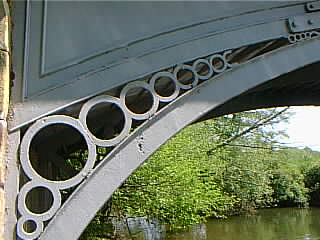 |
The bridge is formed from three ribs, a plated underside to the arch and the roadway. The original roadway is either missing or hidden under a modern concrete deck. The outer ribs of the bridge are formed of two iron arches of different radii... |
| 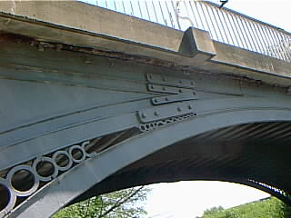 | ...and a horizontal top beam which carries the modern concrete road deck. The railings, though, appear to be the originals. |
| 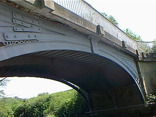 |
Cracks in the ribs have been repaired by bolting on plates. The legend Cast at Coalbrookdale 1797 appears at the apex of the bridge. |
| 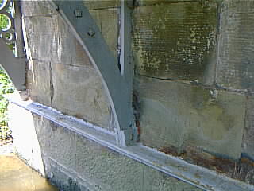 | The lower arch rests on a plate the width of the bridge... |
| 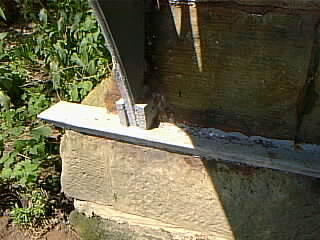 | ...to which they are jointed. |
| 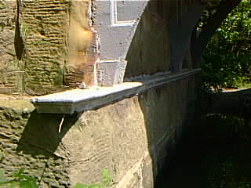 | The plate has a lip or sill over the edge of the stone, but where the stone is eroded you can put a finger in behind the lip and feel the bottom of the plate. |
| 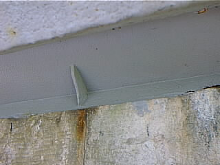 | The upper arch also rests on a plate, which rests on a chamfer (?) cut in the stonework at the appropriate angle. |
| 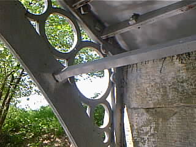 | The three ribs are strengthened by a tie-bar, which is jointed, not bolted, to the outer ribs. |
| 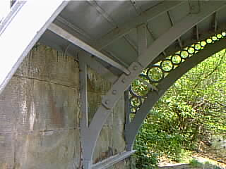 | The inner rib, normally unseen, is plain and functional compared to the decorated outer ones. |
| 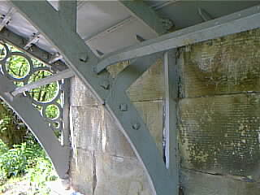 | The tie-bar is jointed to this also. The bolts in this photo support a plate fitted to repair the crack which can be discerned below the second bolt. |
| 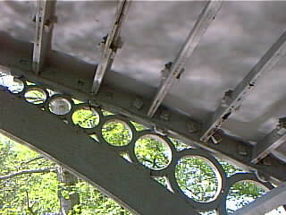 | The plates which form the underside of the bridge rest on a ledge on the upper arch of the outer ribs, and are bolted to it (look closely in the shadow) and to each other... |
| 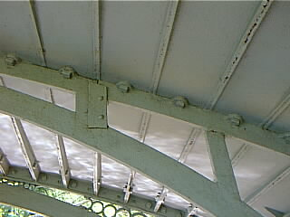 | ..and to lugs on the middle rib. |
| 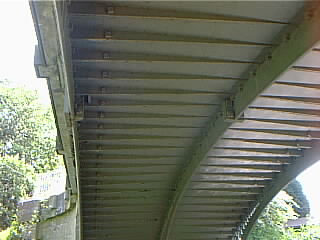 | The ribs are cast in halves and bolted together at the apexes. |
| 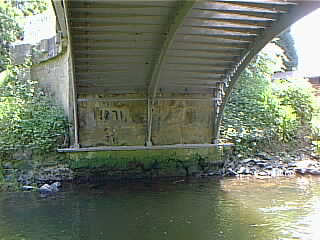 | The whole assembly can be made out here, with care: three ribs, two plates, tie bar, plates which form the arch. |